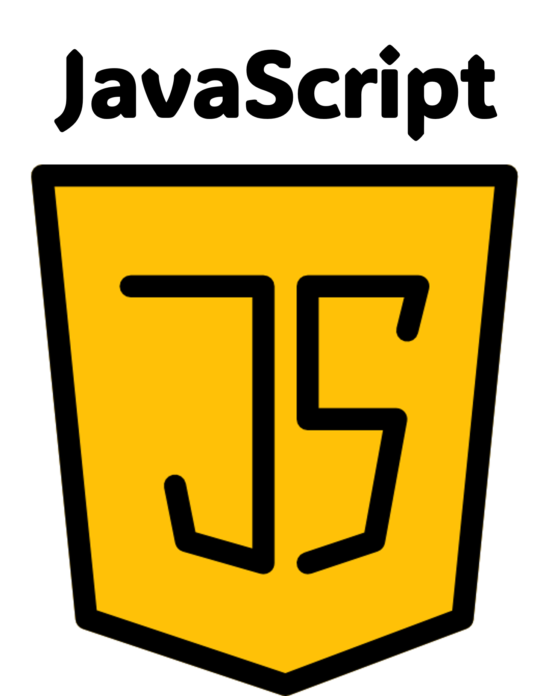
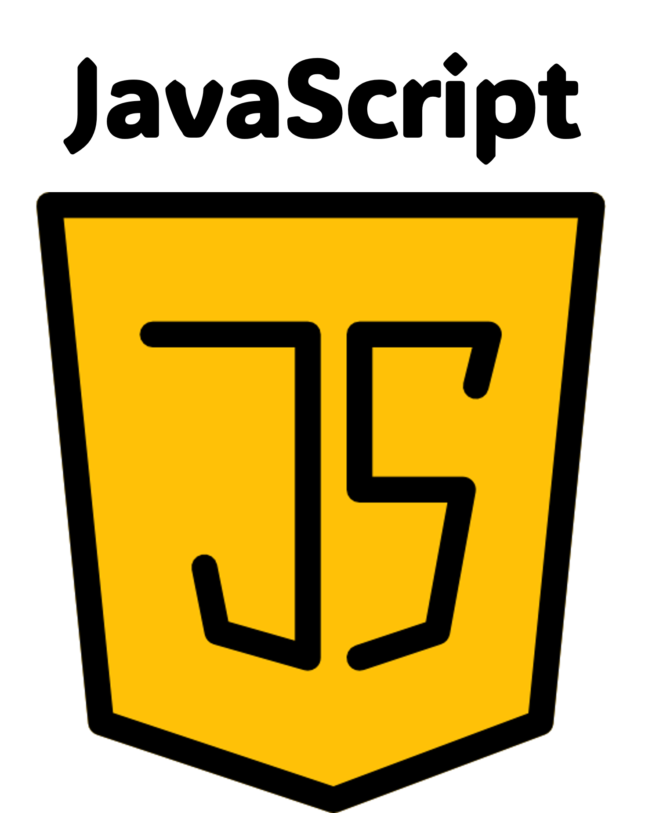

Introducción

¡Encantada! Soy Lucía Herrero. He creado esta web para poder mostrar mi portfolio y para que, quien esté interesado, pueda comprender un poco mejor mi trayectoria profesional y educativa, y mis habilidades.
En esta primera sección os hablaré de mí desde una perspectiva más humana y literaria, para quien quiera ver asomar a mi lado más artístico. Y después, en las siguientes pestañas, os describiré de una manera más práctica mi recorrido, y os mostraré mis primeros proyectos.
Si veis algún fallo en la web, no dudéis en decírmelo. Estos son mis primeros pinitos con la programación, así que habrá un montón que mejorar. ¡Espero que os guste!
Sobre mí
7 de noviembre de 1997, Oviedo, Asturias. Amanece bajo un cielo frío y gris, como es costumbre. Cientos de nubes abrazan la ciudad con la típica serenidad de un otoño asturiano. No es el clima idóneo para que un girasol crezca, pero sí es el escenario perfecto para la llegada de una niña que, aunque nace en silencio, trae consigo una promesa: la de poner el mundo patas arriba.
Siempre he sido curiosa por naturaleza. Nunca me he conformado con saber cómo ocurren las cosas, sin buscar después un por qué. Quizás por eso el camino de las ciencias me parecía el más atractivo.
Con mis ganas insaciables de aprender y mi ambición por superarme constantemente, decidí estudiar ingeniería industrial a pesar de las críticas que me encontraba sobre su dificultad (puede que incluso me motivasen más a hacerlo). Amé mi decisión durante los 4 años del Grado, ya que me sentía en mi salsa. Aquí no había lugar para "conocimientos por imposición". Todo llevaba a un complejo razonamiento lógico, que se integraba a la perfección con mi manera de pensar. Conseguí ser de las mejores estudiantes de la promoción, lo que me llevó a conseguir algunos reconocimientos de excelencia académica como varias matrículas de honor y una beca de colaboración con la Universidad de Oviedo.
Después continué mis estudios con el Máster Habilidante de Ingeniería Industrial, en la Universidad Politécnica de Madrid. El segundo año lo cursé en Estocolmo, con el programa Erasmus (el mejor año de mi vida). Y al volver, supuestamente con todos los estudios terminados, me quedé en un limbo en el que brotaban dudas por todos lados. No tenía claro a qué quería dedicarme concretamente, y con mi primera experiencia profesional, comencé a plantearme si había merecido la pena estudiar una de las carreras más duras, e invertir 6 años de mi vida en ella, para acabar haciendo tareas que sabría hacer perfectamente cuando estaba en el instituto, con el mismo sueldo de otra persona que ha empezado a trabajar sin estudios.
Esta es una situación por la que, tristemente, estamos pasando muchos jóvenes en España. No se está valorando ni explotando nuestro talento.
Recuerdo una conversación con mi manager cuando empecé mi segundo trabajo: "Siento que hay algo que me impide brillar", le dije. Concluimos en que simplemente necesitaba más tiempo, aunque yo no estaba muy convencida de que fuese solo eso. Y tras acumular 3 años de experiencia profesional, decidí parar. Me di cuenta de que estaba aprendiendo mucho, estaba adquiriendo un montón de habilidades blandas, estaba creciendo incluso más como persona que como profesional. Y justo eso es lo que me ayudó a saber que necesitaba parar. Porque seguía sin brillar, y ya no era cuestión de tiempo, sino que no estaba yendo por mi camino. Hoy estoy tremendamente agradecida de aquella arriesgada decisión que muchos no entendieron, porque he vuelto a conectar con mi brillo. Mi inquietud me hacia querer acercarme más a las nuevas tecnologías, mi innovación quería que persiguiese el camino más rompedor, ahondar más en los datos con los que trabajaba y poder dedicar más tiempo a trabajar con ellos para tomar decisiones de gran relevancia para el negocio. No simplemente hacer lo que me decían, sino también poder influir de una manera optimizada. Y ahí me di cuenta de que debía sumergirme en el mundo de los datos.


 
